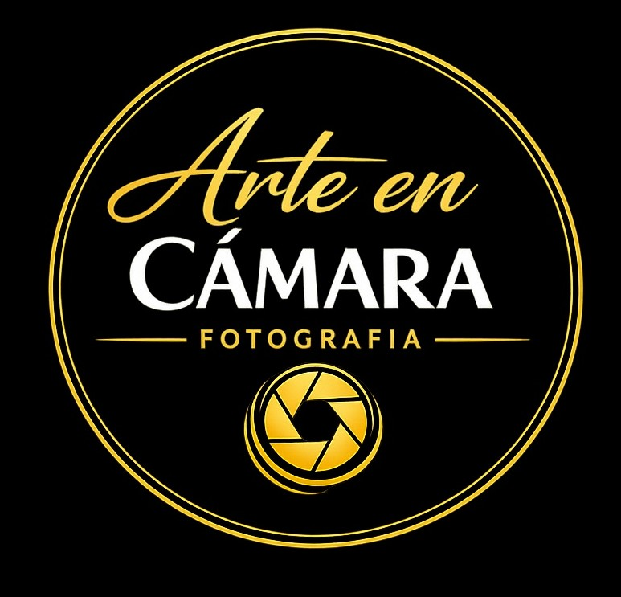
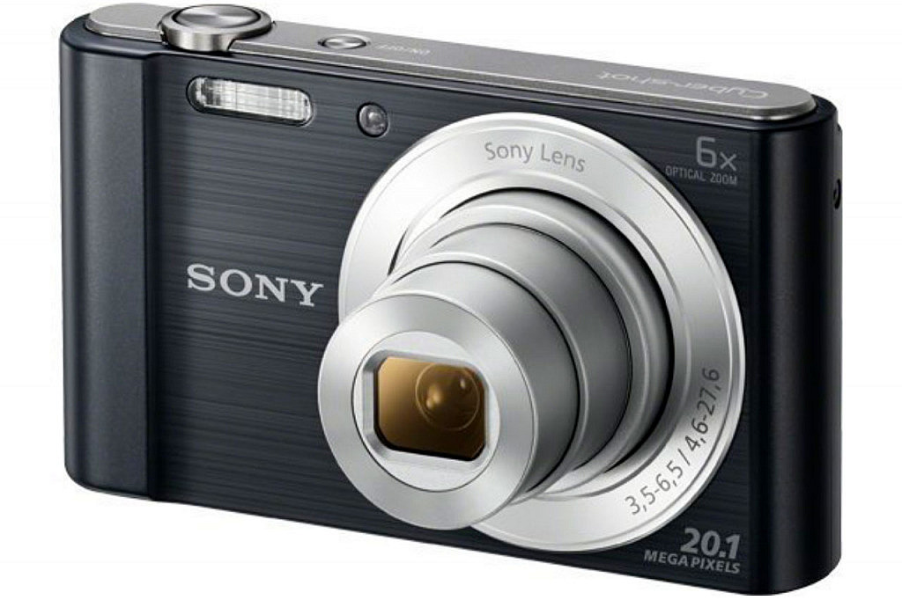
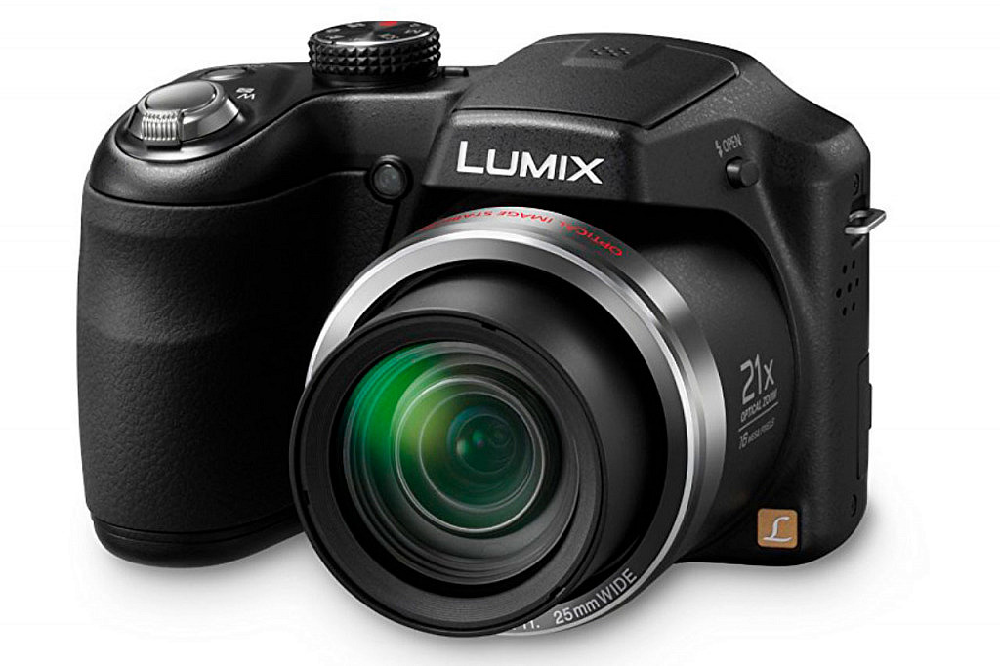
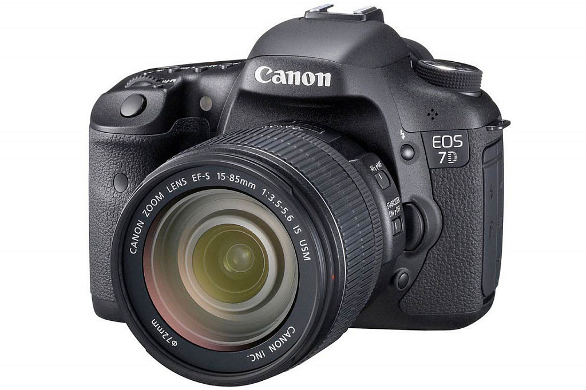
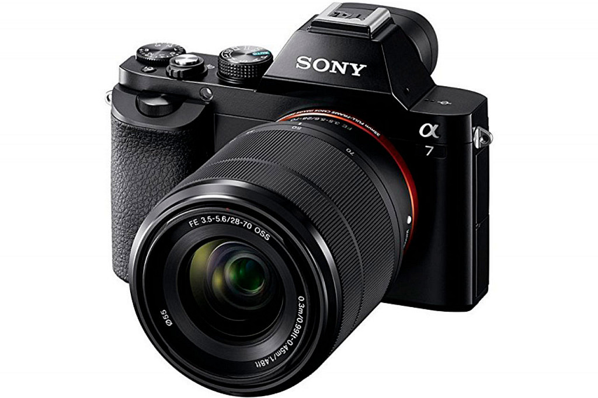
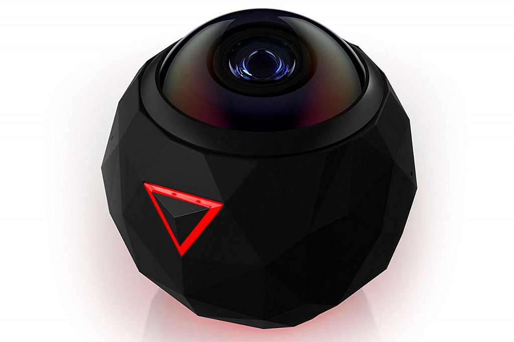
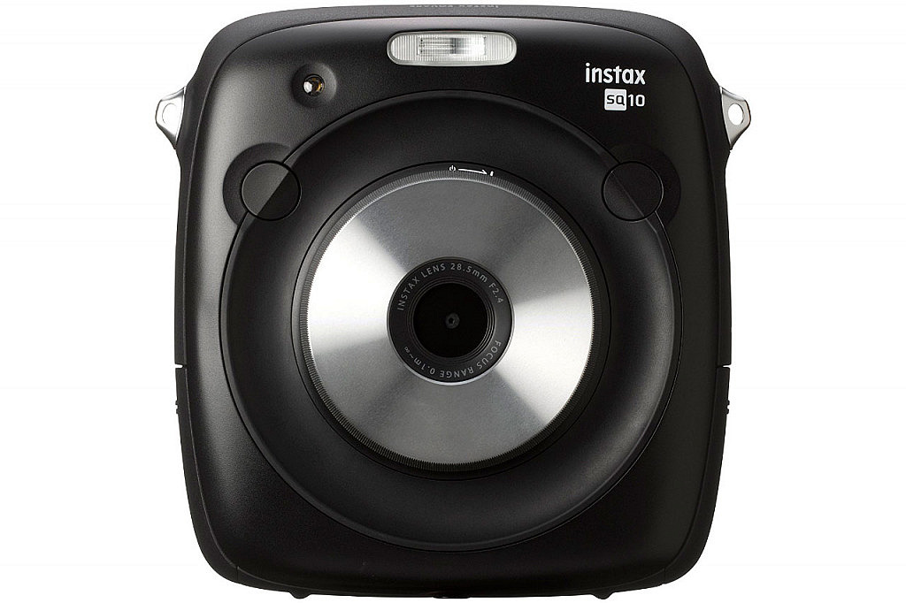

Arte en CámaraLas cámaras compactas son el modelo básico de la fotografía digital. Se caracterizan por ser pequeñas y ligeras, pero también limitadas en calidad.
Características:
Se encuentran a medio camino entre compactas y réflex. Ofrecen mejor calidad y zoom muy potente, llegando incluso a 80x.
Características:
Las más conocidas por su calidad de imagen y versatilidad. Permiten intercambiar objetivos y disparar en RAW.
Características:
Mezcla entre compactas y réflex. Son más pequeñas, sin espejo, pero permiten intercambiar objetivos.
Características:
Permiten capturar fotos y vídeos panorámicos en 360 grados, ideales para realidad virtual y experiencias inmersivas.
Características:
Combinan la esencia retro de imprimir al instante con funciones digitales modernas como almacenamiento y filtros.
Características: